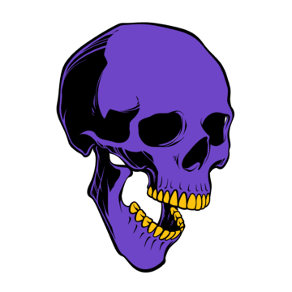

Fiz alguns projetos de front-end (HTML e CSS) neste ano e admito que enfrentei algumas
dificuldades, especialmente em um projeto chamado "Ogani". Esse projeto tinha muita informação e códigos
complexos, o que acabou me deixando entediado, e, por isso, não consegui finalizá-lo. Hoje, lamento não
ter persistido mais, pois se tivesse ido mais atrás, certamente teria adquirido mais conhecimento.
Nos outros dois projetos, tive uma experiência mais tranquila. Um deles eu criei sozinho, enquanto no
outro contei com a ajuda do meu professor e colegas. Um dos projetos é um site de delivery, que, como o
nome sugere, é voltado para comida, e o outro é um site sobre fotos, que oferece uma experiência de
rolagem em que parece que você não está descendo. Se você quiser ver mais sobre esses projetos, clique
no link do meu GitHub abaixo.
